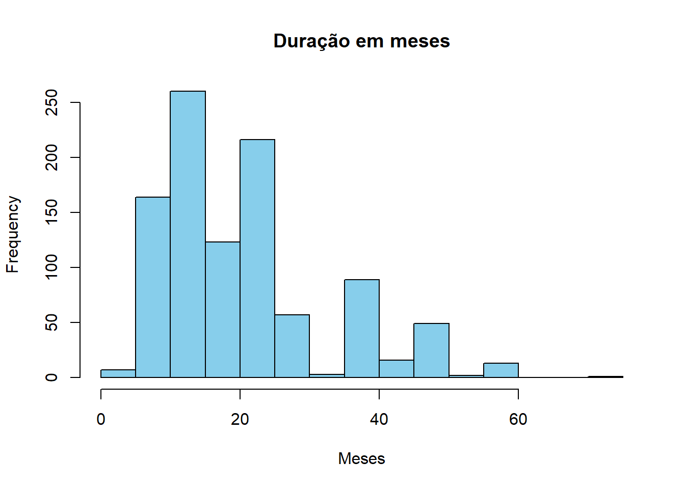

library(dplyr)
Attaching package: 'dplyr'The following objects are masked from 'package:stats':
filter, lagThe following objects are masked from 'package:base':
intersect, setdiff, setequal, unionQuarto enables you to weave together content and executable code into a finished document. To learn more about Quarto see https://quarto.org.
When you click the Render button a document will be generated that includes both content and the output of embedded code. You can embed code like this:
library(dplyr)
Attaching package: 'dplyr'The following objects are masked from 'package:stats':
filter, lagThe following objects are masked from 'package:base':
intersect, setdiff, setequal, union# Caminho para o arquivo
set <- "./statlog+german+credit+data.zip"
# Extraindo o conteúdo em um diretório temporário
temp_dir <- tempdir()
unzip(set, exdir = temp_dir)
# Verificando arquivos extraídos
lista_arquivos <- list.files(temp_dir, full.names = TRUE)
print(lista_arquivos)[1] "C:\\Users\\Raymundo\\AppData\\Local\\Temp\\RtmpyATW0J/file38385a515efc"
[2] "C:\\Users\\Raymundo\\AppData\\Local\\Temp\\RtmpyATW0J/file3838632c70e3"
[3] "C:\\Users\\Raymundo\\AppData\\Local\\Temp\\RtmpyATW0J/german.data"
[4] "C:\\Users\\Raymundo\\AppData\\Local\\Temp\\RtmpyATW0J/german.data-numeric"
[5] "C:\\Users\\Raymundo\\AppData\\Local\\Temp\\RtmpyATW0J/german.doc"
[6] "C:\\Users\\Raymundo\\AppData\\Local\\Temp\\RtmpyATW0J/Index" # Carregando o arquivo "DATA"
dados <- file.path(temp_dir, "german.data")
dados <- read.table(dados, header = FALSE)
# Carregando o arquivo "DATA-NUMERIC"
data_numeric <- file.path(temp_dir, "german.data-numeric")
data_numeric <- read.table(data_numeric, header = FALSE) head(dados) V1 V2 V3 V4 V5 V6 V7 V8 V9 V10 V11 V12 V13 V14 V15 V16 V17 V18
1 A11 6 A34 A43 1169 A65 A75 4 A93 A101 4 A121 67 A143 A152 2 A173 1
2 A12 48 A32 A43 5951 A61 A73 2 A92 A101 2 A121 22 A143 A152 1 A173 1
3 A14 12 A34 A46 2096 A61 A74 2 A93 A101 3 A121 49 A143 A152 1 A172 2
4 A11 42 A32 A42 7882 A61 A74 2 A93 A103 4 A122 45 A143 A153 1 A173 2
5 A11 24 A33 A40 4870 A61 A73 3 A93 A101 4 A124 53 A143 A153 2 A173 2
6 A14 36 A32 A46 9055 A65 A73 2 A93 A101 4 A124 35 A143 A153 1 A172 2
V19 V20 V21
1 A192 A201 1
2 A191 A201 2
3 A191 A201 1
4 A191 A201 1
5 A191 A201 2
6 A192 A201 1dados2 <- dadoswrite.csv(dados, file = "geman-data.csv", row.names = FALSE, fileEncoding = "UTF-8")Categoria = (qualitative) Descrição = Status of existing checking account Valores = A11 : … < 0 DM A12 : 0 <= … < 200 DM A13 : … >= 200 DM / salary assignments for at least 1 year A14 : no checking account
# verificando os valores de V1
unique(dados$V1)[1] "A11" "A12" "A14" "A13"# Criando coluna com transformação dos dados de V1
dados <- dados %>%
mutate(`Status Conta Corrente` = case_when(
V1 == "A11" ~ "Menos de 0 DM",
V1 == "A12" ~ "de 0 a Menos de 200 DM",
V1 == "A13" ~ "Mais de 200 DM",
V1 == "A14" ~ "Sem Conta Corrente",
TRUE ~ NA_character_
))Categoria = (numerical) Descrição = Duration in month
unique(dados$V2) [1] 6 48 12 42 24 36 30 15 9 10 7 60 18 45 11 27 8 54 20 14 33 21 16 4 47
[26] 13 22 39 28 5 26 72 40# Supondo que seus dados estejam em um dataframe chamado 'dados'
# Criar um histograma para visualizar a distribuição da coluna V2
hist(dados$V2, main = "Duração em meses", xlab = "Meses", col = "skyblue", border = "black")
# Supondo que seus dados estejam em um dataframe chamado 'dados'
# Criar uma tabela com os valores únicos e suas contagens
tabela_contagem <- as.data.frame(table(dados$V2))
# Renomear as colunas da tabela
colnames(tabela_contagem) <- c("Duração em meses", "Contagem")
# Mostrar a tabela
print(tabela_contagem) Duração em meses Contagem
1 4 6
2 5 1
3 6 75
4 7 5
5 8 7
6 9 49
7 10 28
8 11 9
9 12 179
10 13 4
11 14 4
12 15 64
13 16 2
14 18 113
15 20 8
16 21 30
17 22 2
18 24 184
19 26 1
20 27 13
21 28 3
22 30 40
23 33 3
24 36 83
25 39 5
26 40 1
27 42 11
28 45 5
29 47 1
30 48 48
31 54 2
32 60 13
33 72 1